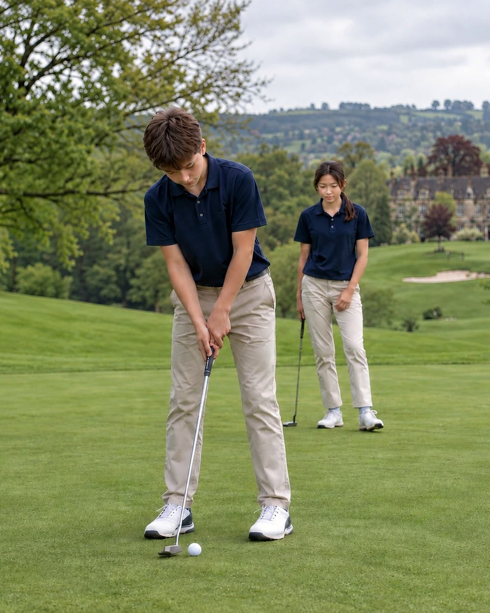
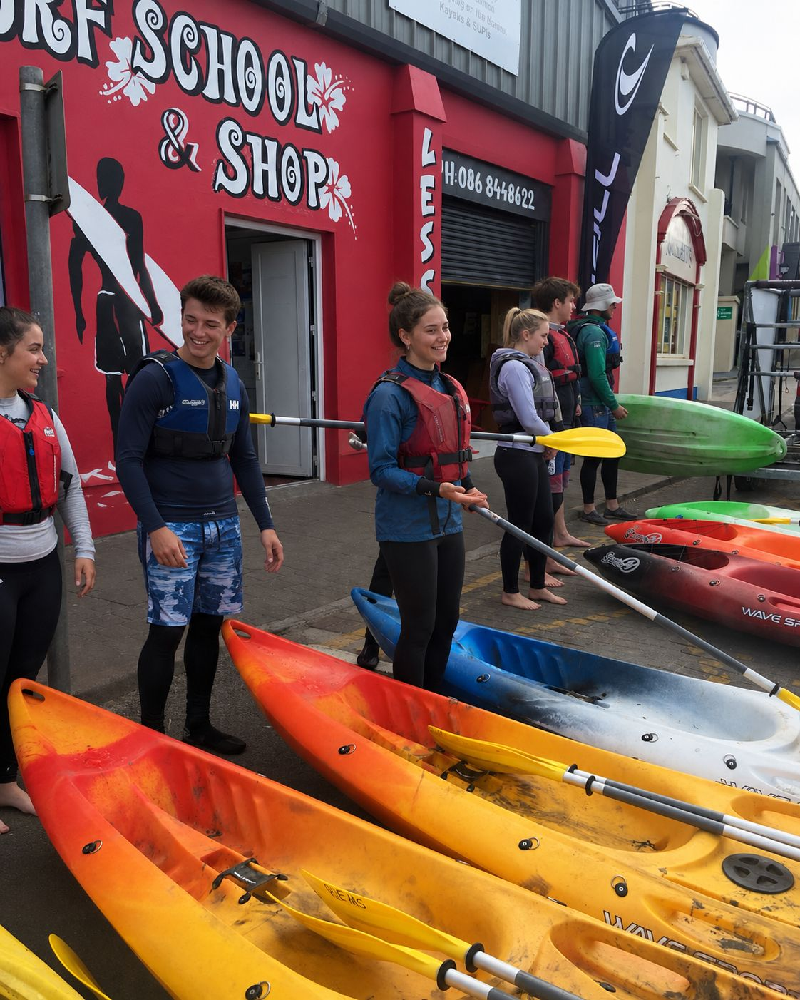

Su educación, el mejor regalo
Acompañamos a niños y jóvenes a aprender, vivir y disfrutar el inglés en cada etapa de su crecimiento.
- 30+ años de experiencia
- Profesores nativos
- Más de 1.000 familias acompañadas
- Programas en Irlanda, UK y EE.UU.
Nuestros programas
Del campamento de verano al año escolar en el extranjero: acompañamos a cada alumno —de los más pequeños a los jóvenes de Bachillerato— en cada momento del año.

¿No tienes claro qué opción encaja mejor?
Cuéntanos la edad de tu hijo y qué estáis buscando. Te orientamos.
Ayudadme a elegir →Crecemos con cada alumno
Desde sus primeros pasos en inglés hasta vivirlo en el extranjero: acompañamos a cada alumno en cada etapa de su crecimiento.

Descubrir
Primeros pasos en inglés, jugando con profesores nativos.

Crecer
Ganan vocabulario y confianza, curso tras curso.

Avanzar
Ganan fluidez y autonomía, y las llevan a sus propios proyectos.

Vivirlo
El inglés deja de ser una asignatura y se convierte en una experiencia.
El inglés se aprende viviéndolo
Programas académicos en Irlanda, Reino Unido y Estados Unidos, con acompañamiento en cada paso del proceso.
- Familia anfitriona verificada
- Seguro médico internacional
- Coordinador local en destino
- Continuidad y convalidación académica


Historias de familias que ya han dado el paso
"Apuntamos a Marcos al campamento de Rosales sin saber si aguantaría 3 semanas seguidas de inglés. Salió pidiendo repetir el verano que viene, y en el cole ya nos han comentado que participa más en clase."
"Mandar a Lucía un año entero a Irlanda con 15 años nos daba miedo, sobre todo por la familia de acogida. El equipo de Interlanguage nos llamaba cada mes para contarnos cómo iba. Volvió con el B2 y muchísima más independencia."
"Nuestros gemelos llevan dos cursos en la extraescolar de los martes y jueves. Lo que más valoro es que cada trimestre nos mandan un informe real de cada uno, no una plantilla genérica."
Lo que más nos preguntáis
Los campamentos y extraescolares empiezan a los 3 años. Los programas de estudiar en el extranjero suelen recomendarse a partir de los 10-12 años, según el destino.
Sí, el 100% del claustro es nativo y además está formado específicamente en enseñanza a niños y adolescentes, no solo en hablar el idioma.
Menos de 24h laborables. Os contactamos por email o teléfono según lo que indiquéis en el formulario.
Sí, de hecho es habitual: muchas familias combinan extraescolar durante el curso con el campamento en verano para mantener el ritmo todo el año.
Revisamos antes el itinerario académico y trabajamos con colegios que convalidan asignaturas. En los programas de año completo coordinamos con el centro en España para que el curso cuente.
Las familias anfitrionas pasan un proceso de selección y verificación, y hacéis una videollamada con ellas antes de viajar. Si algo no encaja ya en destino, cambiamos de familia sin coste adicional.
¿Hablamos?
Cuéntanos qué estás buscando para tu hijo y te ayudamos a encontrar la mejor opción.
Donde cada verano descubren un talento nuevo
Retos diarios en inglés, con monitores 100% nativos, basados en las 8 inteligencias múltiples. Grupos por edad, en Madrid — las plazas se agotan cada verano.
- 3-10 años
- Desde 160€/semana


Un día en TalenTalk
8 retos distintos, un descubrimiento cada día — cada uno trabaja una inteligencia diferente.
Y un reto sorpresa cada día.
Ver el horario completo, hora a hora
Asamblea de la mañana
Booklet de inglés, storytelling y arts & crafts
Snack y preparación
Merienda y cambio de ropa para los juegos de agua
Juegos de agua
La actividad más esperada del día
Cambio de ropa
Nos secamos y nos preparamos para seguir
Actividad especial
Teatro, deporte o experimentos, según el día
Comida y tiempo de relax
Almuerzo y descanso antes de la recogida
Grupos por edad
Dos dinámicas distintas, cada una pensada para su momento.

Los más pequeños
Juego guiado, ritmo tranquilo y primeros pasos en cada inteligencia, en grupos por edad.

Más autonomía
Cada día eligen entre varios retos, con grupos organizados por edad y nivel.

Por qué les gusta a los niños
- Juegos de agua cada día — la actividad más esperada.
- Retos distintos cada día: arte, música, ciencia, deporte y más.
- Un reto sorpresa que cambia cada jornada.
- Hacen amigos nuevos cada verano.
Por qué da tranquilidad a las familias
- Monitores 100% nativos, formados para trabajar con niños.
- Método TalenTalk® con más de 20 años de recorrido, desde 2002.
- Horario detallado hora a hora, sin sorpresas.
- Dos sedes en Madrid: Sagrado Corazón Rosales y Chamartín.
"Apuntamos a Marcos al campamento de Rosales sin saber si aguantaría 3 semanas seguidas de inglés. Salió pidiendo repetir el verano que viene, y en el cole ya nos han comentado que participa más en clase."
Así se vive un día de campamento con nosotros

Del campamento de verano en Madrid a vivir un verano —o un curso entero— en el extranjero. Acompañamos a las familias en cada etapa del camino.
Inscribe a tu hijo/a en el campamento
Elegid las semanas que os encajen — no hace falta que sean seguidas. Rellenamos la ficha y os confirmamos la plaza en menos de 24h.
✓ 3 pasos rápidos, menos de 2 minutosInglés extraescolar para hablar, participar y ganar confianza
De Infantil a la ESO, en el propio colegio y con profesores nativos en grupos reducidos. Un programa continuo para que cada alumno gane soltura y nivel real hablando inglés.
- Profesores 100% nativos
- Grupos reducidos
- En el propio colegio
- De Infantil a la ESO
Horario y tarifa correspondientes al programa en el Colegio Sagrado Corazón.
Todo en inglés, de principio a fin
Cuatro cosas que ocurren en cada sesión, se trabaje lo que se trabaje.
Hablar y escuchar
Escuchan y hablan en inglés desde el primer día, sin traducir por dentro.
Comunicar con confianza
Aprenden a decir lo que piensan y a defender sus propias ideas.
Vocabulario y nivel
Progresión adaptada a su etapa, con preparación de exámenes de Cambridge.
Jugar, crear y colaborar
Juegos, proyectos y trabajo en equipo como forma de aprender, no como premio.
Un club para cada edad
El mismo método, adaptado al momento de cada alumno — desde Infantil hasta la ESO.
Club Fun TalenTalk
A través del juego, favoreciendo la comprensión oral y sus primeras conversaciones.
Club TalenTalk Walkers
Recreaciones dinámicas, diálogos cortos, cuentos y canciones.
Club TalenTalk Prime
Proyectos específicos que enriquecen sus habilidades comunicativas.
Club TalenTalk Senior Challenge
Situaciones y prácticas activas para impulsar su nivel.
KETPETFCECAEQué se llevan, más allá del idioma
- Soltura y confianza al hablar delante de otros.
- Vocabulario y comprensión oral, curso a curso.
- Creatividad y pensamiento crítico.
- Trabajo en equipo e inteligencia emocional.
Ideal para familias que…
- Quieren que hable más inglés, no que memorice más.
- Buscan continuidad todo el curso, no clases sueltas.
- Valoran los grupos reducidos y la atención cercana.
- Prefieren una actividad dentro del propio colegio.
"Nuestros gemelos llevan dos cursos en la extraescolar de los martes y jueves. Lo que más valoro es que cada trimestre nos mandan un informe real de cada uno, no una plantilla genérica."
Muchas de estas familias siguen con nosotros cuando sus hijos dan el salto a estudiar en el extranjero — del inglés de cada semana a un verano o un curso académico completo fuera.
Preguntas frecuentes
Desde Educación Infantil hasta la ESO. Cada etapa tiene su propio club, con objetivos y dinámicas adaptadas a su edad.
Por etapa educativa, en grupos reducidos que se abren desde 8 alumnos, para que todos tengan tiempo real de hablar.
Sí, el 100% del claustro es nativo y está formado específicamente para enseñar a niños y jóvenes, no solo para hablar el idioma.
El programa va de octubre a mayo, siguiendo el calendario escolar, en horario de tarde dentro del propio colegio.
En el Colegio Sagrado Corazón, 65€ al mes más 35€ anuales de material. Si tu colegio es otro, escríbenos y te confirmamos las condiciones.
¿Encaja con la edad y el momento de tu hijo?
Cuéntanos su curso y qué buscáis, y te orientamos sin compromiso.
Consultar plazas para el curso
Estudiar en el extranjero
Programas de inmersión total en Irlanda, Inglaterra y Estados Unidos, desde estancias de verano hasta un curso académico completo, con acompañamiento en cada paso.
- Tres destinos: Irlanda, Inglaterra y Estados Unidos
- Campamento de verano, curso escolar o año académico completo
- Selección de colegio y familia anfitriona a medida
- Acompañamiento durante todo el proceso, no solo en la matrícula

Alumnos de Interlanguage viviendo la experiencia en primera persona.
¿Cómo es el día a día?
Cada mañana con la familia anfitriona, desayuno y camino al colegio como uno más. Clases en inglés, actividades extraescolares por la tarde y fines de semana en familia o con otros estudiantes internacionales. Vive como un estudiante local, con toda su rutina.
¿Y si vuelve con el curso perdido?
Revisamos antes el itinerario académico para que el año fuera sume, no reste. Trabajamos con colegios que convalidan asignaturas, coordinamos con el centro en España en los programas de año completo, y planificamos el regreso para que se reincorpore sin lagunas.
¿Y si la familia anfitriona no funciona?
Las familias anfitrionas pasan un proceso de selección y verificación, y ya han recibido antes a otros estudiantes internacionales. Antes del viaje, hacéis una videollamada para conoceros. Si algo no encaja una vez allí, tenemos protocolo de cambio de familia sin coste adicional.
Seguridad, sin letra pequeña
Todos los programas incluyen seguro médico internacional durante toda la estancia, un coordinador local para cualquier imprevisto y un contacto de emergencia en España disponible 24/7. Vuestro hijo/a nunca está realmente solo/a, aunque esté a miles de kilómetros.
"Mandar a Lucía un año entero a Irlanda con 15 años nos daba miedo, sobre todo por la familia de acogida. El equipo de Interlanguage nos llamaba cada mes para contarnos cómo iba. Volvió con el B2 y muchísima más independencia."Ver los 3 destinos con fotos →
Lo que incluye el precio
Sin sorpresas después de matricularos.
- Matrícula y plaza en el colegio de destino
- Alojamiento en familia anfitriona o residencia, según programa
- Seguro médico internacional
- Acompañamiento y coordinación local durante todo el programa
- Material escolar según el centro
- Vuelos internacionales
- Gastos personales del estudiante
- Actividades extra opcionales
Especialidades en inglés
Programas monográficos que usan una pasión concreta —teatro, música, ciencia— como vehículo para practicar inglés, para niños que ya tienen una base y quieren llevarla más lejos.
- Teatro, música y proyectos temáticos en inglés
- Pensado para alumnos con nivel intermedio-alto
- Grupos reducidos y muy especializados
- Complementa a la perfección con el extraescolar o el campamento

Treinta años creciendo junto a las familias que confían en nosotros
Interlanguage Studies lleva más de 30 años enseñando inglés a niños y jóvenes en Madrid, con la misma idea desde el principio: un idioma no se memoriza, se vive — con profesores nativos, en grupos reducidos, al ritmo de cada alumno.
Empezamos con clases y campamentos de verano, y con los años hemos ido creciendo junto a las familias que nos daban su confianza. Hoy acompañamos a más de 1.000 familias en cada etapa: desde sus primeros años de inglés hasta la experiencia de estudiar en el extranjero.
El inglés se aprende viviéndolo.
Más de 30 años nos han enseñado que un idioma no se memoriza: se utiliza.
Un mismo equipo y un mismo método acompañan a cada alumno en todas las etapas: lo que hace que una familia siga con nosotros durante años no es un programa suelto, sino una forma de enseñar que se mantiene desde los 3 años hasta el extranjero.
Formados específicamente para enseñar a niños — no solo para hablar el idioma.